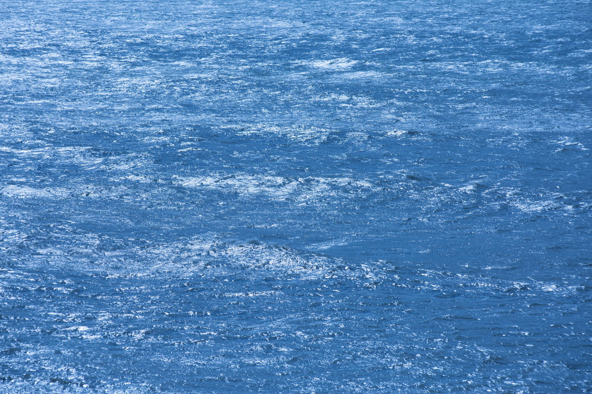

Nama Tim: MARC Dewasrani
PT: UPNVJ
Lintasan: {{ L }}
geotag:
DAY
DATE
TIME
COORDINATE
SOG(knot)
SOG(km/j)
COG
{{ x.DAY }}
{{ x.DATE }}
{{ x.TIME }}
{{ x.COORDINATE1 }}E ,{{ x.COORDINATE2 }}w
{{ x.SOG }}
{{ x.SOG2 }}
{{ x.COG }}
Hasil Gambar:

surface
under
`